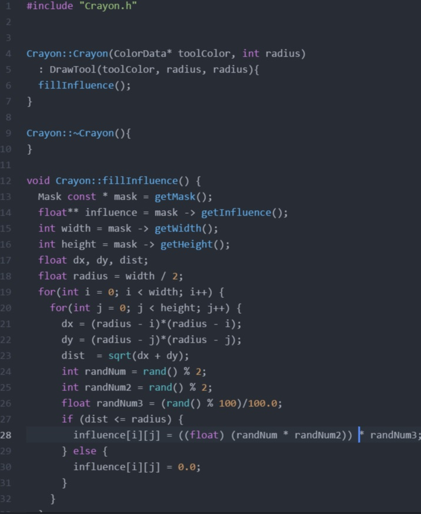
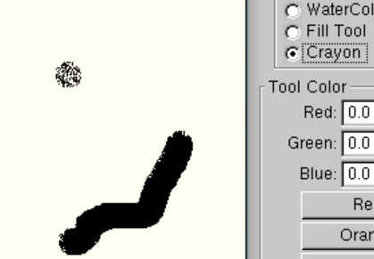

Iteration 1
The part of this project I wrote that I tried to start coding in C++ and put most effort on was the Crayon Tool. It is one of the tools that takes circle masks and randomly choose pixels to fill the mask. So this tool looks pretty rough surface at the edge of each mark it draws.

This snippet is from the Crayon tool class, which is the class I wrote for our team. On our final design, we decided to make DrawTool class to implement basic methods for each tool classes, and we inherited each classes from DrawTool class. The implementation of this is an override of one of the virtual methods from DrawTool class, fillInfluence class. I followed the basic syntax for all of our application, as we discussed at the start of our project. We decided to use camelCase variable and function names, brackets on the same lines as their statement and short functions.
This code takes radius as parameter and default value is 20. It calculates each distance from center of circle mask, and uses standard library function rand() to generate random number between 0 to 1 and put it into each pixels. 
In this way, this tool looks rough surface at the edge like crayon. Maybe next iteration, I would elaborate some more by putting random transparancy into each pixels of mask to look more like real Crayon drawing.